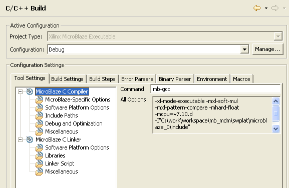

Software Applications
Project file views
Building Applications
The C/C++ Build property page of a Managed Make project allows you to:

See C/C++ Project Properties for further information.
Software Applications
Project file views
Building Applications

Working with C/C++ project files

C/C++ Project Properties
C++ Project Properties, Managed, C/C++ Build
C++ Project Properties, Managed, C/C++ Build, Tool Settings
C++ Project Properties, Managed, C/C++ Build, Build Settings
C++ Project Properties, Managed, C/C++ Build, Build Steps
C++ Project Properties, Managed, C/C++ Build, Error Parsers
C++ Project Properties, Managed, C/C++ Build, Environment
C++ Project Properties, Managed, C/C++ Build, Macros
Copyright © 1995-2009 Xilinx, Inc. All rights reserved.